Welcome to MATILDA-Online#
MATILDA is a notebook-based workflow for modeling water resources in glacierized catchments.
🧭 How this works#
MATILDA is a series of Jupyter notebooks. They contain a mix of executable code and descriptive text. There is one notebook for each step of the modeling workflow:
Notebook 1 — Catchment delineation and static data acquisition
Notebook 2 — ERA5-Land forcing data
Notebook 3 — CMIP6 climate projection data
Notebook 4 — MATILDA model setup and calibration
Notebook 5 — Scenario simulations
Notebook 6 — Analysis and visualization

🚀 How to launch the tool#
You can run the notebooks either online or on your local computer. Note that the online environment has only limited computing capacities!
Choose one way to start from the icons on the left:
Launch online: click the rocket icon (🚀) above and start the online environment called Binder.
Run locally: click the GitHub icon (
 ), open the repository, and follow the setup steps in the manual.
), open the repository, and follow the setup steps in the manual.
✅ What you need before continuing#
Much of the data acquisition will be done using the Google Earth Engine (from here on called GEE). So before we can start, we need to register with GEE and link it to MATILDA.
To run MATILDA with the example data, you need:
a valid Google Cloud project ID
permission to use that project
To run MATILDA with your own data, you additionally need:
discharge observations (in the same format as the example)
gauging station coordinates
📝 By the end of this Notebook you will have …#
understand how the MATILDA workflow is organized
prepared Google Cloud / Earth Engine access
found or created a valid Cloud project
authorized access to this project
prepared the
config.ini
After that, continue with Notebook 1.
☁️ Google Cloud project: where to start#
MATILDA currently requires each user to have her or his own Google Cloud project ID.
If you already used Google Earth Engine or another Google Cloud service #
➡️ Continue with the Authorization tutorial
If you are new to these services#
➡️ Continue with signing up right below ⬇️
🌏 Signing up for Google Earth Engine (GEE)#
To start visit the Earth Engine website and click on Get Started in the top right corner.

Log into your Google account or create one using any email adress.

Once you signed in, click on Continue to agree that your e-mail address is used by the Earth Engine Code Editor.
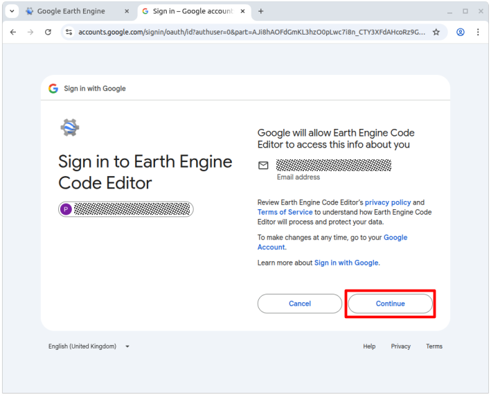
Next, click Allow to grant the Code Editor the required permissions.
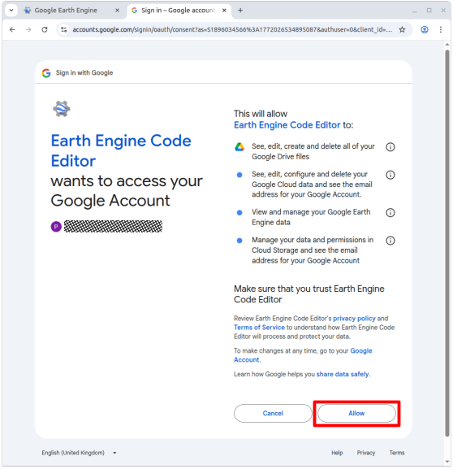
5. A default cloud project called “My Project” is created for you. If you click on the project name in the tool bar (1)…
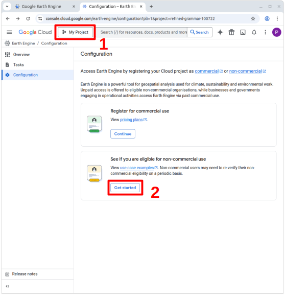
… you will see a pop-up window where you can add, delete or rename cloud projects. You can also see the cloud ID of your project (here refined_grammar_100722). You will need your ID later to tell MATILDA-Online which cloud project to use.

Close the pop-up window, to continue to register your project as either commercial or non-commercial. In the current setup, MATILDA-Online is designed as a non-commercial tool. Therefore, we only describe the process for scientific or educational applications. To do so, click on Get started in the lower box (2).
On the following page click Get started once again.
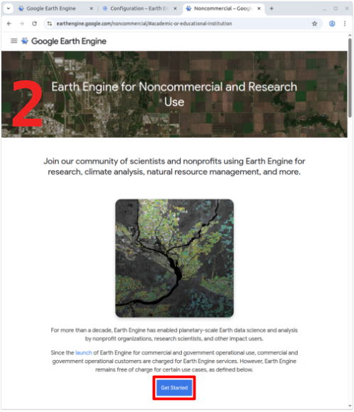
Complete the questionnaire with your background and institution and click Register to submit it. A free community plan is sufficient for using the tool.
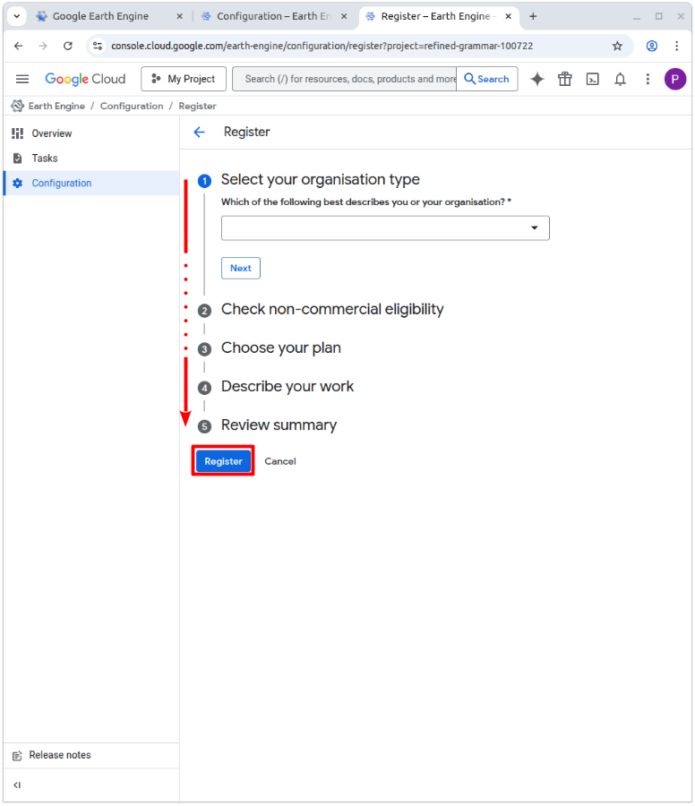
Finally, enable the Earth Engine API and wait for the process to finish.
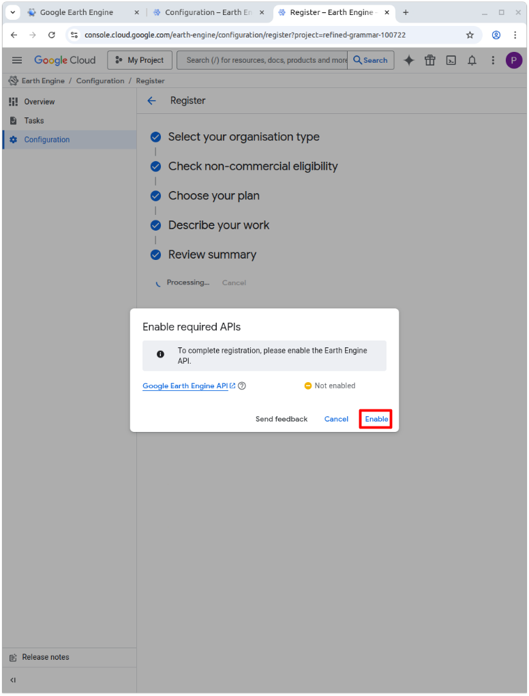
When you see the green confirmation box, you have sucessfully registered a Google Cloud Project and can continue to use MATILDA-Online 🎉.
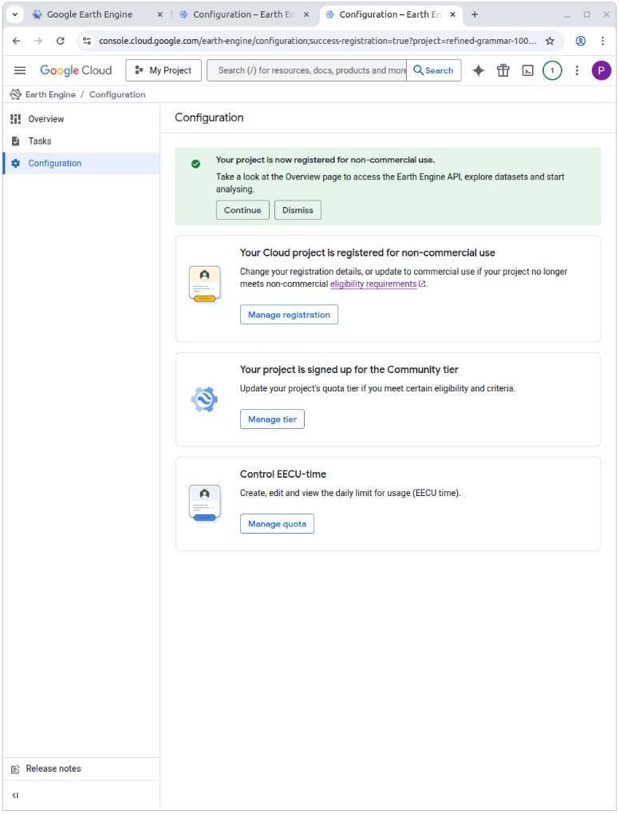
🔑 Authorize access for Google Earth Engine#
Find your project ID#
To tell MATILDA which cloud project to use, we need to store the projects unique ID in the config.ini file. You can find your project ID when you click on the project name in the tool bar (1) of your Google Cloud Console home screen.
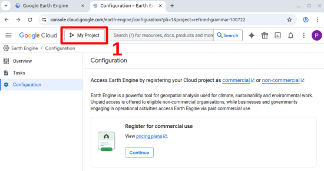
In the pop-up window you can see the cloud ID in the last column (here refined_grammar_100722).
Use your project ID in the notebooks#
In the
config.inifile edit the entryCLOUD_PROJECTand change it to your projects ID.
The Notebooks that use GEE (1-3) include a cell for initialization and authentification similar to the one below. If it is the first time the GEE API is initialized, a hyperlink will be generated and opened in a pop-up window. (If there is no pop-up, just copy-paste the url in a browser tab.)
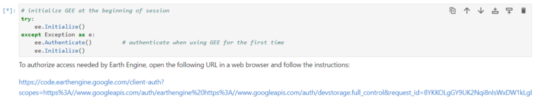
This brings you to a GEE log-in page. There you need to …
… choose your account and project and click on GENERATE TOKEN. Make sure to choose the correct combination of account and project since Google is very strict in terms of account roles and permissions.
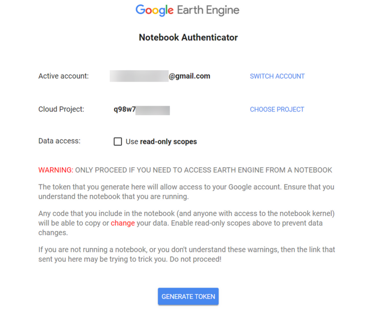
If not done already, you will need to sign in to your Google Account. You’ll get a security notification for unverified apps. Click continue.
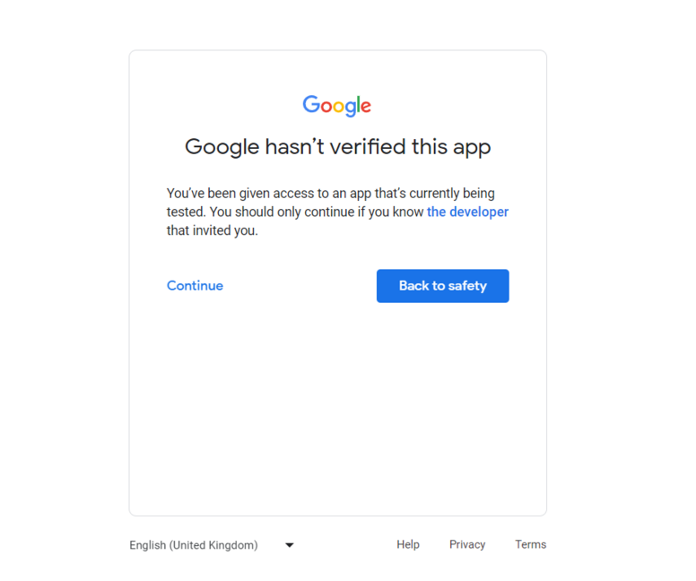
Next, grant your Earth Engine Notebook Client access to your account and click Continue.
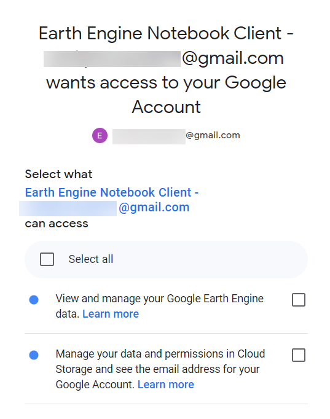
Finally, copy the authorization code …
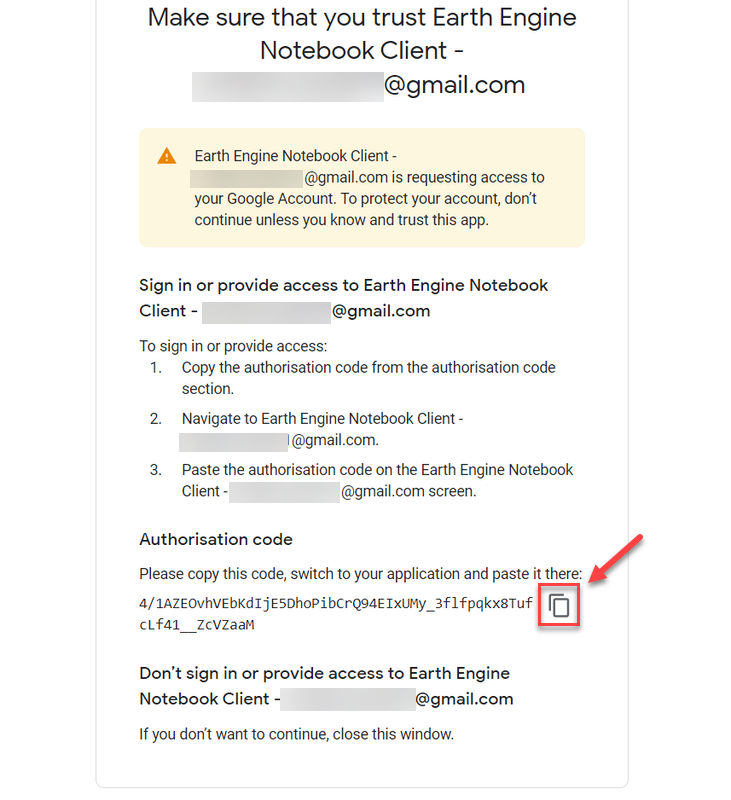
… and paste it into the designated field in the notebook.
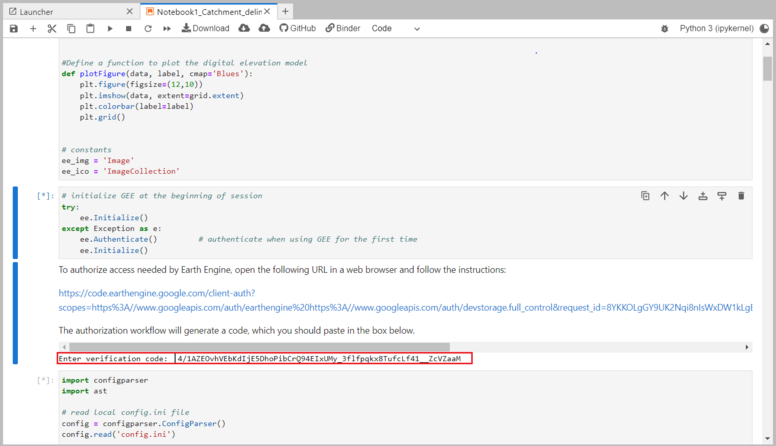
You should get a message saying Successfully saved authorization token. 🎉 You are now ready to start with the MATILDA workflow. Before we dive into data handling, let’s have a look at …
⚙️ The config.ini file#
This file contains a list of essential information for the workflow and allows customization. If you want to try MATILDA-Online with the example dataset, you only need to edit the entry CLOUD_PROJECT and change it to your project ID (check the Authorization tutorial). If you want to use your own data, replace the file with the discharge observation in the input/ folder and adapt the reference coordinates accordingly.
The first section
[FILE_SETTINGS]allows you to edit paths and file names for in- and outputs. This can especially be useful if you model multiple catchments in the same copy of the repository.In the
[CONFIG]section you can …… specify your Google Cloud project. This information is mandatory to use the GEE in the workflow. The current project
matilda-eduis set up for demonstration purposes and is not publicly accessible.… specify your reference coordinates (usually your gauging station location) and select the calibration period. The latter should cover your observation period plus a few years before as a spin-off.
… specify the calibration period of the hydrlogical model depending on your data.
… change the digital elevation model used.
… choose download option from GEE (direct download or via
xarray).… choose whether to create scenario-based projections or just model the past.
… disable the generation of live maps.
… configure the style of output figures. More information about the available styles can be found in the SciencePlots manual.
… choose between a faster (
.pickle) and a more compact (.parquet) format for intermediate files.… set the number of cores available for computation. If you are in a binder, leave this at 1.
… decide whether you want to store your output folder in a
.zipfile at the end of every Notebook. This is useful when you work online and want to download your (intermediate) results.
3. The last section [MEDIA_SERVER] holds credentials for the file access on a file repository of our university and should not be edited if you are not a university member and know what you’re doing. The credentials only grant read access to glacier-related public data and are not of value to you.
With the config.ini set up, you may now start with Notebook 1.